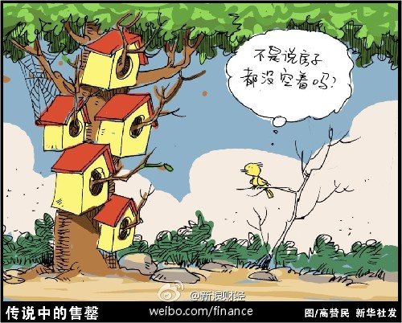

陈总，您用“畜”是不对的，应该用“蓄”。 //@陈劲松:「捂盘？！」：我们的预售制度有一个重要环节是：申请和审批！条件是达到四证齐全和工程形象进度（比如结构封顶）。一般而言，楼盘动工时，围板就有名称、电话，接待客户。这叫＂畜客＂，不叫捂盘！@新浪财经:【业内曝开发商捂盘制造饥饿营销 对赌市场】在调控收紧风声频出之下，开发商却宁愿放过推盘出逃的好时机。一位不愿署名的业内人士私下告诉记者，“日光”的畅销盘毕竟只是少数，有的“日光盘”是蓄客半年、甚至一年的结果。用捂盘来制造饥饿营销，这是开发商对赌市场的一种手段。 网页链接 